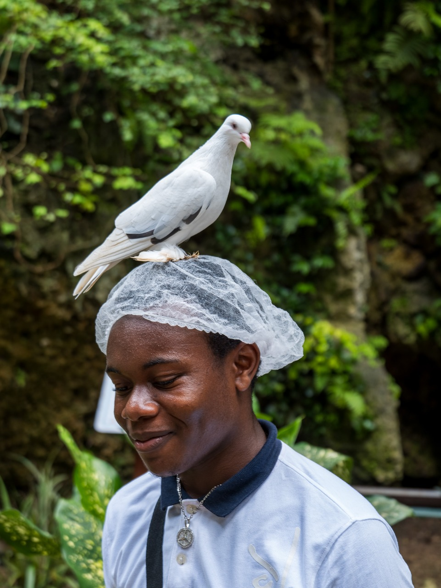
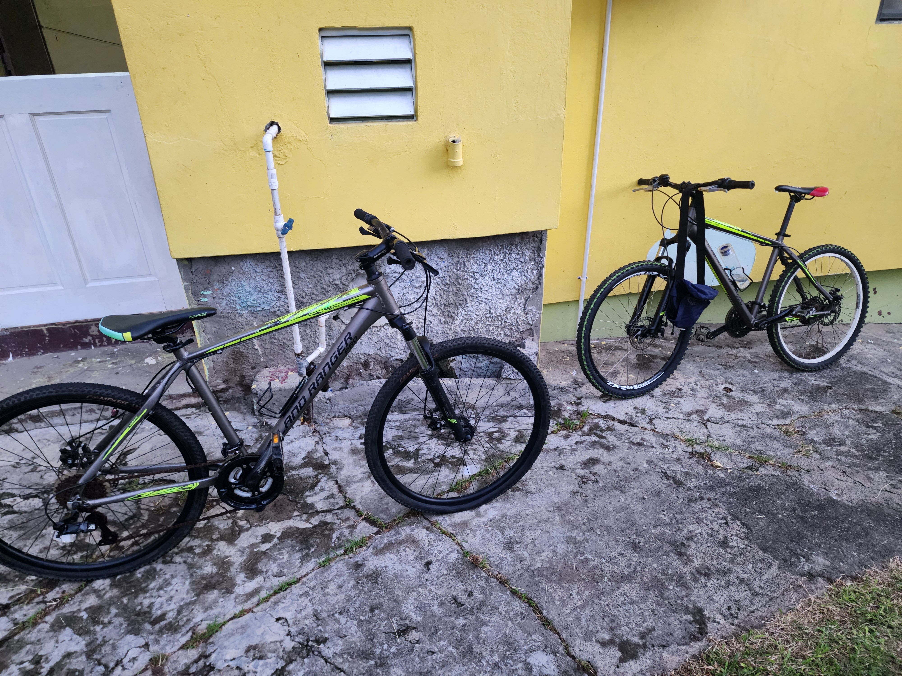
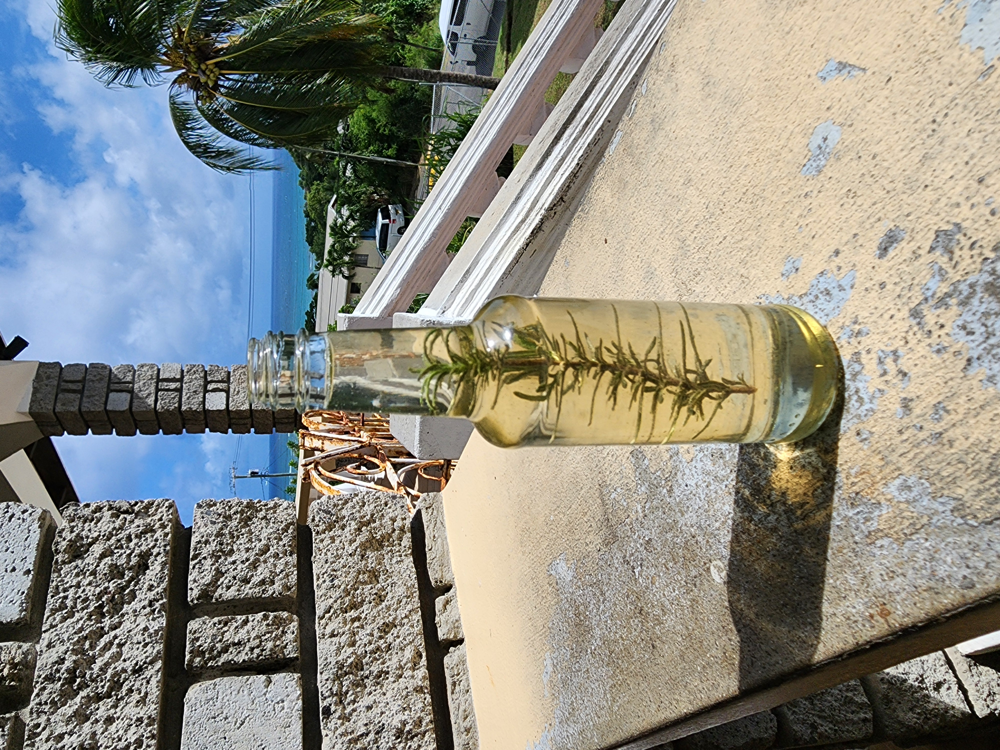

I'm Philon George, a year 2 student at the T.A Marryshow Community College (TAMCC),completing my Associate's degree in Computer Systems Technology (CST). Web design is an intestring course. Outside of school, I enjoy fishing and cycling.
Home
Welcome to my website! This is the best website you will ever come across.
About Me

My Projects
Here are some of the projects I've worked on:
Project One - Bicycle Build
These are my two main bikes that i use, which i have built myself.

the one with the white tire in the back is my main bike, and i let my cousin use the other one.
Project Two - Rosemary Infused Coconut Oil
I also made a batch of rosemary infused coconut oil for cooking purposes. It can also be utilized for skincare.

Skills that i currently have in Website Development
| Skill | Proficiency/Level |
|---|---|
| HTML | Beginner |
| CSS | Beginner |
| JavaScript | Beginner |
Contact
Email: philong6645@tamcc.edu.gd